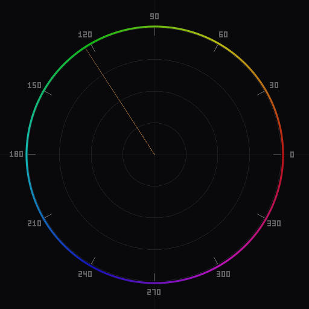
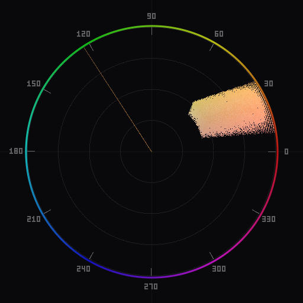
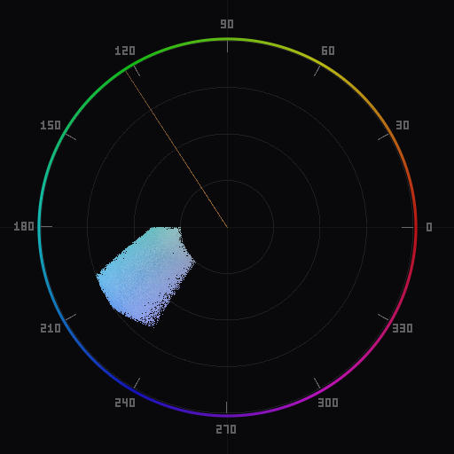
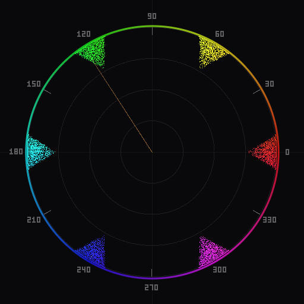
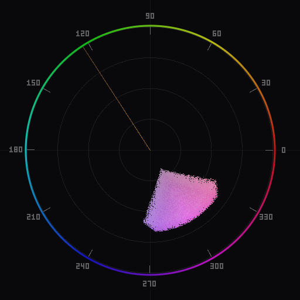

How to Read a Vectorscope: A Photographer's Guide
A step-by-step explanation of what each part of the vectorscope display means and how to extract useful information from it during editing.
The basics: center, angle, and distance
If you are new to vectorscopes, start by reading What Is a Vectorscope for background on what the tool does. This guide assumes you understand the basic concept and focuses on practical interpretation.
The vectorscope has three elements you need to internalize:

- The center crosshair is zero saturation. Any pixel that is perfectly neutral—a true gray with equal red, green, and blue values—plots exactly at this point. The closer a dot is to center, the less chromatic content that pixel has.
- The angle from center indicates hue. In the standard YCbCr layout, red is at roughly 103 degrees (11 o'clock), magenta at about 61 degrees, blue near 347 degrees, cyan at approximately 283 degrees, green at 241 degrees, and yellow at 167 degrees. Targets or labels around the perimeter mark these positions.
- The distance from center indicates saturation. A pastel blue and a vivid electric blue have the same hue angle, but the vivid blue sits much farther from center. If any dots reach the outer boundary of the scope, those pixels are at maximum saturation for the color space.
These three properties—center reference, angular hue, and radial saturation—are sufficient to interpret any vectorscope display. Everything else is pattern recognition built on top of them.
Reading color clusters
Photographs rarely produce a uniform spray of dots. Instead, you see clusters—dense concentrations of plotted points that correspond to the dominant colors in the image. Learning to read these clusters is the most immediately useful vectorscope skill.

A single tight cluster means the image is dominated by one color family. A portrait shot in open shade might show one cluster near the skin tone line and a smaller one near blue (from the sky reflected in the background). A landscape at golden hour might show a large warm cluster (amber-to-yellow) with a thin extension toward cyan from the sky.
The shape of a cluster matters. A round, compact cluster indicates a narrow range of hues at similar saturations—typical of a carefully graded image or a scene with a limited palette. An elongated cluster stretched from center outward means there is a wide range of saturations within a single hue family. A fan-shaped spread indicates hue variation at similar saturation levels.
When you see two clusters on opposite sides of the scope, you are looking at a complementary color relationship. Teal-and-orange grading produces this pattern clearly: one cluster toward orange (warm highlights and skin), one toward teal (shadows and cooled midtones). This is one of the fastest ways to verify that a color grade is working as intended.

Watch how clusters move as you edit. Adjusting the temperature slider shifts the entire cluster along the blue-yellow axis. Adjusting tint shifts it along the green-magenta axis. Increasing saturation pushes all clusters outward from center. These relationships become second nature with practice.
Spotting a color cast
A color cast means the entire image is shifted toward a particular hue. On a vectorscope, this is easy to see: the overall center of mass of the dot pattern is offset from the crosshair.

In a properly balanced image with a variety of colors and some neutral tones, you expect the densest part of the distribution to sit near or at center. If you photograph a gray card under your scene's lighting and it plots off-center, that offset is your cast. In practice, you rarely have a gray card in every shot, but any scene with surfaces that should be neutral—white walls, concrete, clouds, a white shirt—gives you a reference. If those pixels are pulling away from center toward a particular hue, that is the cast.
Common casts and where they show up on the scope:
- Warm cast (tungsten, golden hour spill): cluster shifts toward yellow-orange, roughly 10–11 o'clock in YCbCr.
- Cool cast (shade, overcast, uncorrected daylight): cluster shifts toward blue, roughly 5–6 o'clock.
- Green cast (fluorescent lighting, tree canopy bounce): cluster shifts toward green, roughly 7–8 o'clock.
- Magenta cast (some LED panels, tint slider over-correction): cluster shifts toward magenta, roughly 1–2 o'clock.

The fix is straightforward: adjust temperature and tint until the neutral tones in your image pull back toward center. The vectorscope gives you real-time feedback as you move the sliders, which is far more precise than judging by eye alone.
The skin tone reference line
Most vectorscopes draw a line from the center toward approximately 123 degrees in YCbCr space (sometimes called the I-line or skin tone line). This line marks the hue angle where human skin tones fall, across all ethnicities.
This is not an approximation or a rule of thumb. Skin tone hue is remarkably consistent across the human population. What varies between individuals is saturation (how far from center the cluster sits) and luminance (which the vectorscope does not show). A person with very fair skin and a person with very dark skin will both produce clusters at nearly the same angle on the scope. The fair skin cluster will be closer to center (lower saturation), and the dark skin cluster may be slightly farther out, but the angular position stays within a narrow band around that reference line.
When editing portraits, check whether the skin tone cluster aligns with this line. If the cluster drifts clockwise (toward yellow), the skin looks sallow or jaundiced. If it drifts counter-clockwise (toward magenta or red), the skin looks flushed or sunburned. Either drift means your white balance or color grading has introduced an unwanted hue shift into the skin.
For a complete walkthrough of correcting skin tones using this reference, see the Skin Tone Correction guide. For related white balance techniques, see White Balance and the Vectorscope.
Putting it into practice
Here is a concrete workflow for incorporating the vectorscope into your editing:
- Start with white balance. Open the vectorscope alongside your image. Identify areas that should be neutral (grays, whites, black surfaces). Adjust temperature and tint until those areas cluster at or near center.
- Check skin tones. If the image contains people, verify that skin tones align with the skin tone reference line. Adjust tint first if they are off-axis, then fine-tune temperature.
- Evaluate saturation. Look at how far your clusters extend from center. If dots are hitting the outer boundary, consider reducing vibrance or saturation to avoid clipping. If the distribution is unusually tight around center, the image may look flat and could benefit from a selective saturation boost.
- Assess harmony. Step back and look at the overall shape of the distribution. Two opposing clusters suggest a complementary palette. Three evenly spaced clusters suggest a triadic scheme. A narrow arc suggests an analogous palette. This is useful information when deciding how to grade.
- Grade with feedback. As you apply split-toning, HSL adjustments, or color grading, watch the vectorscope respond in real time. It tells you exactly what each slider is doing to your color distribution.
The vectorscope does not replace your creative judgment. It augments it with objective data. Over time, you will find yourself glancing at the scope instinctively, the same way you check the histogram for exposure.
To try this workflow with real-time vectorscope feedback in Photoshop or Lightroom Classic, download Chromascope.